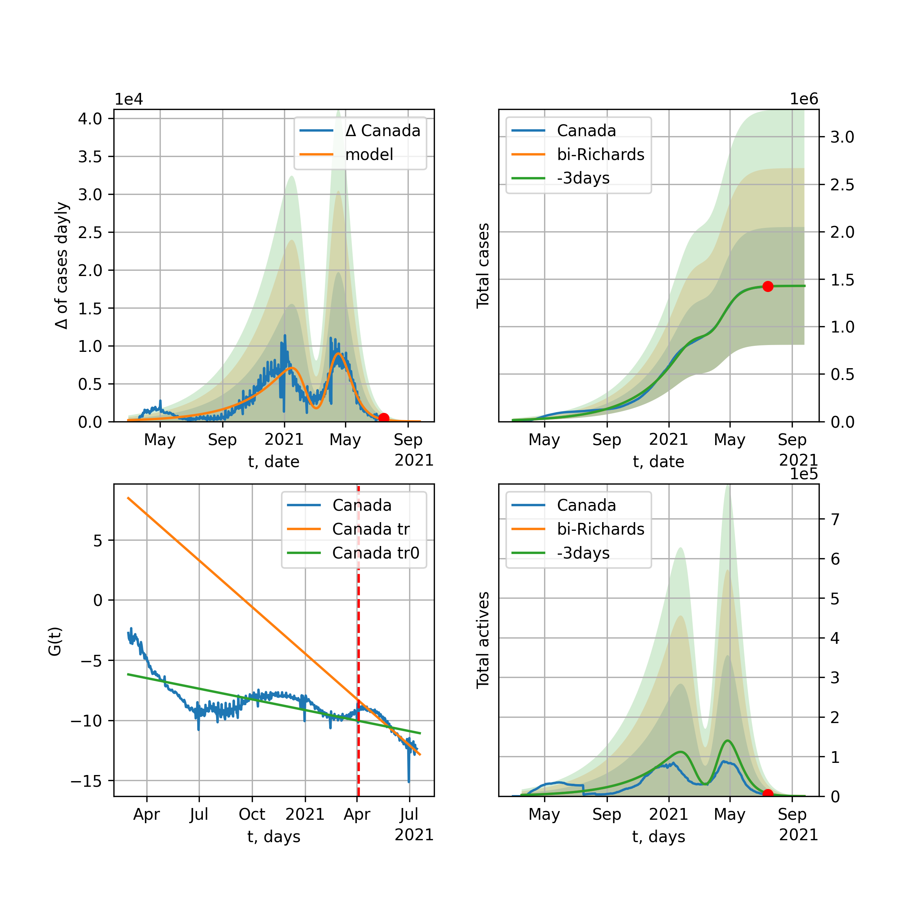
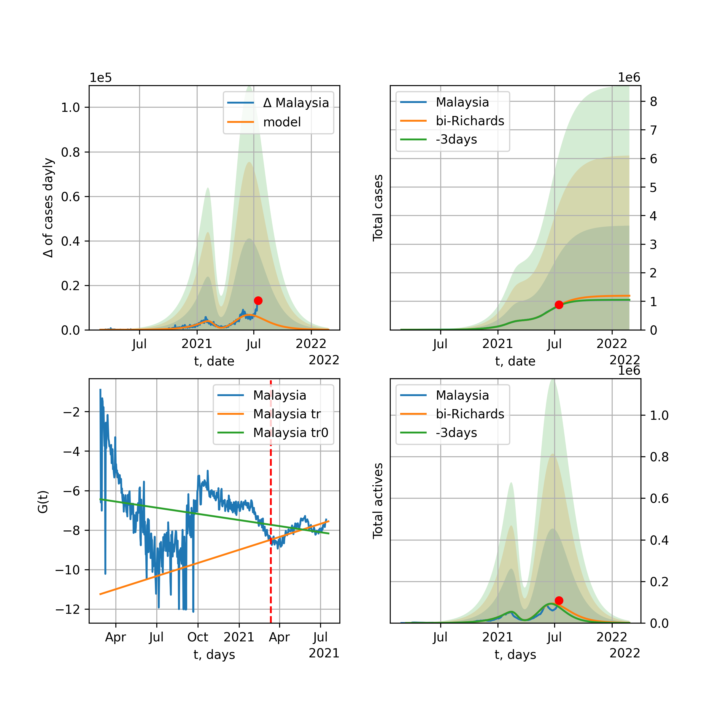
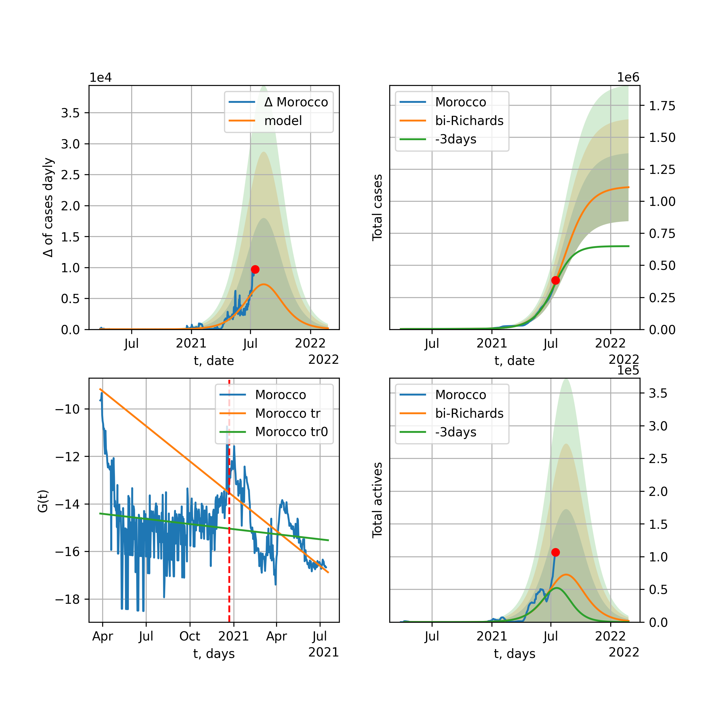
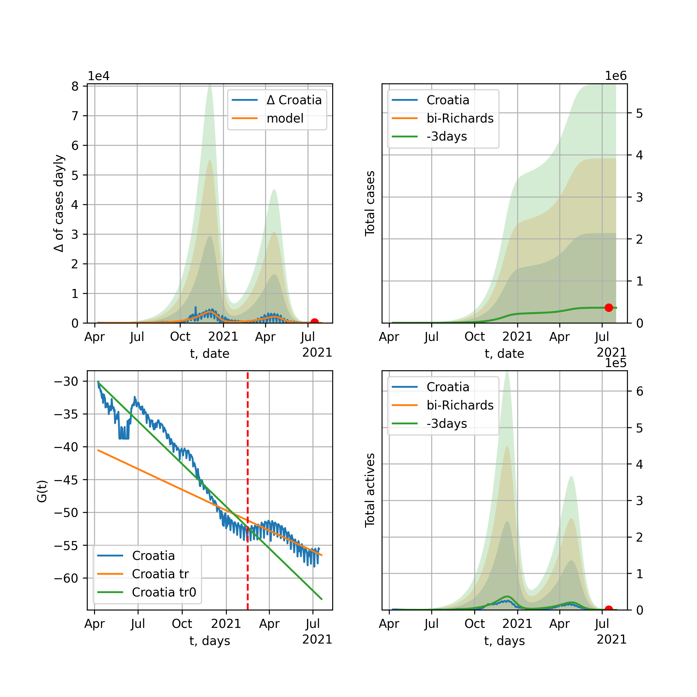
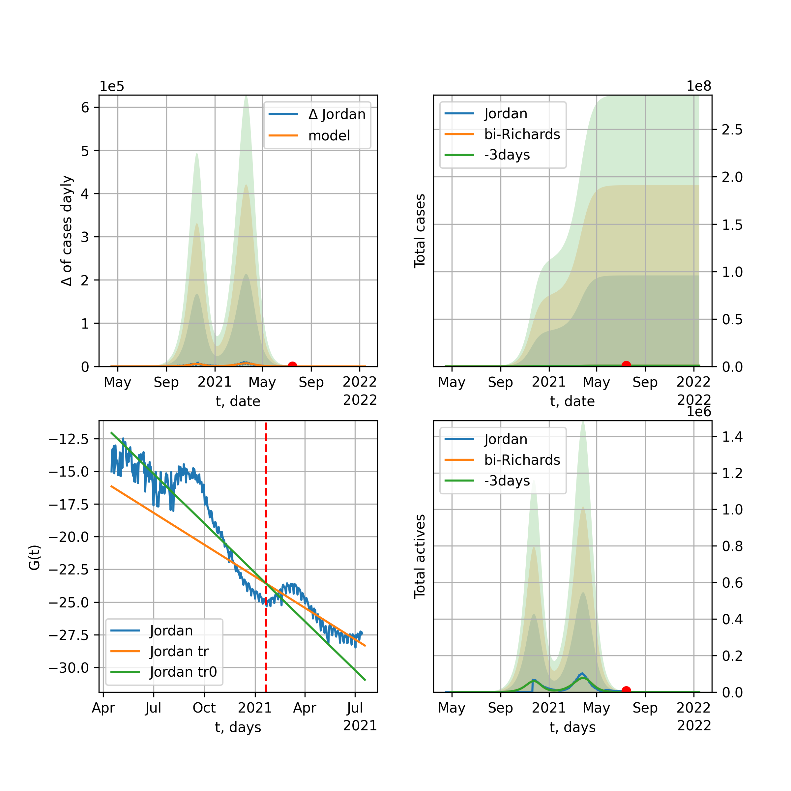

The number of COVID-19 cases \(K (t)\) after transformation is expressed as follows: $$G(t)=\log{\dfrac{1}{K(t)^2}\dfrac{d K(t)}{d t}}=\log{\dfrac{k}{L}}-k(t-t_0)$$ was used to decide how many humps the model should have. It follows from a logistic function that describes the change in people infected with the virus and is expressed as: $$K(t) = \dfrac{L}{1+e^{-k (t-t_0)}}=\dfrac{L}{2}+\dfrac{L}{2}\tanh{\dfrac{k(t-t_0)}{2}}$$ which is solution of the differential logistic growth equation $$\frac{dK}{dt}=k K \left(1 - \frac{K}{L}\right)$$ where t0 is $$t_0=\dfrac{1}{k}\log{\dfrac{L-K(0)}{K(0)}}$$ k is the exponential growth factor, and L is the quencher coefficient of growth and the lower it is, the faster the growth is extinguished. In addition, Richards' growth function $$R(t) = \dfrac{L}{\left(1+e^{-k \nu (t-t_0)}\right)^\frac{1}{\nu}}$$ were presended, where \(G_R(t)\) expressed as follow $$G_R(t)=\log{\dfrac{1}{K(t)^{1+\nu}}\dfrac{d K(t)}{d t}}=\log{\dfrac{k}{L^\nu}}-k\nu (t-t_0). $$ The following is the result of the world and some countries K (t) infected dynamics model and its comparison with observed experimentally observed results for the determination of parameters using the least squares method [4]: $$ \min{\sum_{i=1}^{N}\left(K(t_i,a)-y_i\right)^2}$$ where K (t, a) is the selected or logistic function $$K(t,a) = \dfrac{a_0}{1+e^{-a_1 (t-a_2)}}$$ or bi-logistic function [3] $$K(t,a) = \dfrac{a_0}{1+e^{-a_1 (t-a_2)}}+\dfrac{a_3}{1+e^{-a_4 (t-a_5)}}$$ or a tri-logistic function $$K(t,a) = \dfrac{a_0}{1+e^{-a_1 (t-a_2)}}+\dfrac{a_3}{1+e^{-a_4 (t-a_5)}}+\dfrac{a_6}{1+e^{-a_7 (t-a_8)}}$$ Finally, q-logistic and rq-logistic models replaced most of multy-logistic country models, where \(K_Q(t)=K((t-t_0)(t-t_1))\) and \(K_{RQ}(t)=R((t-t_0)(t-t_1))\) . The fourth graph shows the ratio $$S(t)=\dfrac{K_a^\prime(t)}{K^\prime(t)}$$ where \(K_a(t)\) is the number of active cases, \(K(t)\) is the number total cases, after averaging those values for three days. This size in the rise stats in Korea and the world was about 1 and is currently 0.8 . In addition, standard deviation bands for model and model derivative for 1, 2 and 3 sigma, respectively, were added. The red dot in the graphs means the value of current today . Obviously, the coefficient \(L\) indicates the country’s actions in actively disinfecting, and the coefficient k is proportional to the amount of social contacts. Therefore, the reduction or disinfection of the L factor, disinfection and disinfection again are on the agenda today. It should be mentioned that it is only possible to say exactly what logistical growth rate COVID-19 develops after the end of the pandemic, but from the current point of view it can be seen that the model output can vary by several tens of percent to 2x, and the standard deviation of experimental data . However, there is another argument that leads to the assumption that it contains simple logistical dynamics. These are R (t) linear approximations fairly accurate for all countries and a coefficient of determination close to 0.9, and as the trend changes direction and this coefficient begins to decrease, the accuracy of the trend model increases again with the transition to a humpback graph. Therefore, the results of the simple multi-logistic function model will continue to be presented, bearing in mind that the predicted result is the lower limit of the possible scenarios. Assuming that all countries choose a slow (Korean scenario) exit from quarantine, a second hump with coefficients of 'scenario' was added (without optimisation) to predict the results of the model.
World

World data at: 2021-06-26
10 day model MAPE: 0.000384
model: bi-Richards
coeffs: [-9.14890800e+06 2.27661337e-01 3.35768050e+02 7.70490646e-01]
rational stdev: 0.186509
forecast at the end of period: +985 days
deltaDaycases: 394
total cases: 264588741 ± 49348230
total death: 5731591 ± 3206983
bi-Richards approximation splitting point: 395
actives k: 33
trend coefficient of determination: 0.886028
intercept: -14.269383
slope: -0.016461
trend coefficient of determination: 0.886857
intercept: -11.443212
slope: -0.020346
European Union

European Union data at: 2021-06-26
10 day model MAPE: 0.005444
model: bi-Richards
coeffs: [1.86464922e+07 1.31790726e-01 2.47073991e+02 1.71570780e-01]
rational stdev: 1.214027
forecast at the end of period: +140 days
deltaDaycases: 1457
total cases: 34499055 ± 41882784
total death: 781542 ± 2846439
bi-Richards approximation splitting point: 335
actives k: 35
trend coefficient of determination: 0.028889
intercept: -7.190355
slope: -0.001363
trend coefficient of determination: 0.817429
intercept: 2.932534
slope: -0.030984
Brazil

Brazil data at: 2021-06-26
10 day model MAPE: 0.004416
model: bi-Richards
coeffs: [ 1.86930829e+07 8.29737209e-01 -6.02534103e+01 1.15973950e-02]
rational stdev: 0.209337
forecast at the end of period: +315 days
deltaDaycases: 4097
total cases: 24828334 ± 5197480
total death: 692473 ± 434879
bi-Richards approximation splitting point: 220
actives k: 17
trend coefficient of determination: 0.515361
intercept: -2.067351
slope: -0.014793
trend coefficient of determination: 0.006707
intercept: -5.415615
slope: -0.000464
Russia

Russia data at: 2021-06-26
10 day model MAPE: 0.223677
model: bi-Richards
coeffs: [1.56885855e+06 2.12270458e+00 1.21283193e+02 8.27029668e-03]
rational stdev: 0.238994
forecast at the end of period: +105 days
deltaDaycases: 1838
total cases: 5792510 ± 1384372
total death: 141521 ± 101467
bi-Richards approximation splitting point: 376
actives k: 26
trend coefficient of determination: 0.655408
intercept: -3.375897
slope: -0.007710
trend coefficient of determination: 0.493160
intercept: -9.712833
slope: 0.008204
USA

USA data at: 2021-06-26
10 day model MAPE: 0.000870
model: bi-Richards
coeffs: [1.35460249e+07 4.08595908e-01 2.11305097e+02 9.24488880e-02]
rational stdev: 0.196369
forecast at the end of period: +168 days
deltaDaycases: 11343
total cases: 38090547 ± 7479790
total death: 683996 ± 402946
bi-Richards approximation splitting point: 266
actives k: 52
trend coefficient of determination: 0.574653
intercept: -4.037125
slope: -0.010989
trend coefficient of determination: 0.907380
intercept: -0.816239
slope: -0.018439
Spain

Spain data at: 2021-06-25
10 day model MAPE: 0.004822
model: bi-Richards
coeffs: [1.93434436e+06 6.04327207e+00 1.29470562e+02 4.67723586e-03]
rational stdev: 0.379552
forecast at the end of period: +36 days
deltaDaycases: 258
total cases: 3664483 ± 1390861
total death: 78259 ± 89110
bi-Richards approximation splitting point: 306
actives k: 52
trend coefficient of determination: 0.022552
intercept: -4.602576
slope: -0.002223
trend coefficient of determination: 0.660075
intercept: -0.711698
slope: -0.013670
Italy

Italy data at: 2021-06-26
10 day model MAPE: 0.000595
model: bi-Richards
coeffs: [1.55666409e+06 3.19290048e+00 2.66430524e+02 1.20363935e-02]
rational stdev: 2.168500
forecast at the end of period: +105 days
deltaDaycases: 23
total cases: 4300782 ± 9326248
total death: 128760 ± 837648
bi-Richards approximation splitting point: 368
actives k: 28
trend coefficient of determination: 0.037000
intercept: -4.569888
slope: -0.002710
trend coefficient of determination: 0.883931
intercept: 7.245569
slope: -0.031913
United Kingdom

United Kingdom data at: 2021-06-26
10 day model MAPE: 0.004227
model: bi-Richards
coeffs: [4.14863761e+06 2.96731622e-02 3.01373611e+02 1.39562561e+00]
rational stdev: 0.211741
forecast at the end of period: +105 days
deltaDaycases: 1
total cases: 4482232 ± 949071
total death: 121693 ± 77302
bi-Richards approximation splitting point: 208
actives k: 48
trend coefficient of determination: 0.618985
intercept: -15.203414
slope: -0.053039
trend coefficient of determination: 0.867518
intercept: -16.990299
slope: -0.026783
France

France data at: 2021-06-26
10 day model MAPE: 0.006615
model: bi-Richards
coeffs: [4.00404601e+06 3.61832311e-02 3.41518438e+02 7.42397393e-01]
rational stdev: 2.545884
forecast at the end of period: +70 days
deltaDaycases: 1072
total cases: 6088664 ± 15501033
total death: 117110 ± 894445
bi-Richards approximation splitting point: 300
actives k: 70
trend coefficient of determination: 0.381382
intercept: -12.512032
slope: -0.011121
trend coefficient of determination: 0.581950
intercept: -9.627164
slope: -0.019688
Germany

Germany data at: 2021-06-26
10 day model MAPE: 0.001144
model: bi-Richards
coeffs: [ 4.01182120e+06 1.43114854e+00 -9.53509521e+01 8.46203867e-03]
rational stdev: 0.176220
forecast at the end of period: +49 days
deltaDaycases: 3233
total cases: 3968220 ± 699279
total death: 97018 ± 51289
bi-Richards approximation splitting point: 215
actives k: 17
trend coefficient of determination: 0.300626
intercept: -3.760283
slope: -0.012553
trend coefficient of determination: 0.712530
intercept: -0.415751
slope: -0.014339
Turkey

Turkey data at: 2021-06-26
10 day model MAPE: 0.003357
model: bi-Richards
coeffs: [2.67990113e+06 9.52756678e-02 3.77326188e+02 8.01687761e-01]
rational stdev: 0.211603
forecast at the end of period: +35 days
deltaDaycases: 48
total cases: 5342749 ± 1130540
total death: 48961 ± 31080
bi-Richards approximation splitting point: 360
actives k: 17
trend coefficient of determination: 0.565715
intercept: -13.472588
slope: -0.012866
trend coefficient of determination: 0.870005
intercept: -3.193907
slope: -0.035623
Iran

Iran data at: 2021-06-26
10 day model MAPE: 0.008237
model: bi-Richards
coeffs: [1.53829101e+06 1.06873358e-01 3.97545352e+02 3.88698335e-01]
rational stdev: 0.252589
forecast at the end of period: +189 days
deltaDaycases: 1
total cases: 3208968 ± 810549
total death: 85062 ± 64457
bi-Richards approximation splitting point: 380
actives k: 25
trend coefficient of determination: 0.631519
intercept: -6.863772
slope: -0.012497
trend coefficient of determination: 0.281684
intercept: -6.442970
slope: -0.010518
Canada

Canada data at: 2021-06-26
10 day model MAPE: 0.001523
model: bi-Richards
coeffs: [5.34090883e+05 1.97642282e-01 3.78704296e+02 2.57420386e-01]
rational stdev: 0.442451
forecast at the end of period: +91 days
deltaDaycases: 7
total cases: 1432485 ± 633805
total death: 26579 ± 35279
bi-Richards approximation splitting point: 400
actives k: 17
trend coefficient of determination: 0.430250
intercept: -5.819533
slope: -0.009064
trend coefficient of determination: 0.925474
intercept: 8.158289
slope: -0.040016
South Africa

South Africa data at: 2021-06-26
10 day model MAPE: 0.015568
model: bi-Richards
coeffs: [9.70486984e+05 2.24842364e+00 1.52289055e+02 1.39529154e-02]
rational stdev: 0.905015
forecast at the end of period: +140 days
deltaDaycases: 1
total cases: 1656308 ± 1498984
total death: 51733 ± 140457
bi-Richards approximation splitting point: 235
actives k: 17
trend coefficient of determination: 0.801584
intercept: -1.667298
slope: -0.020657
trend coefficient of determination: 0.121060
intercept: -4.375059
slope: -0.005272
Belgium

Belgium data at: 2021-06-25
10 day model MAPE: 0.003661
model: bi-Richards
coeffs: [4.60246208e+05 4.70234955e-01 2.44143072e+02 5.00992165e-02]
rational stdev: 3.092294
forecast at the end of period: +141 days
deltaDaycases: 43
total cases: 1138883 ± 3521760
total death: 26471 ± 245568
bi-Richards approximation splitting point: 350
actives k: 61
trend coefficient of determination: 0.169642
intercept: -4.450620
slope: -0.006033
trend coefficient of determination: 0.556850
intercept: 0.291504
slope: -0.017213
Peru

Peru data at: 2021-06-26
10 day model MAPE: 0.000777
model: bi-Richards
coeffs: [1.12070453e+06 1.47350452e+00 1.51617166e+02 1.33006057e-02]
rational stdev: 0.274413
forecast at the end of period: +105 days
deltaDaycases: 430
total cases: 2189392 ± 600796
total death: 205005 ± 168767
bi-Richards approximation splitting point: 265
actives k: 10
trend coefficient of determination: 0.905422
intercept: -1.962163
slope: -0.017594
trend coefficient of determination: 0.000384
intercept: -5.906808
slope: -0.000195
Netherlands

Netherlands data at: 2021-06-26
10 day model MAPE: 0.002723
model: bi-Richards
coeffs: [5.64779750e+05 2.65201519e-01 3.43756798e+02 1.49378378e-01]
rational stdev: 1.762855
forecast at the end of period: +105 days
deltaDaycases: 19
total cases: 1721805 ± 3035292
total death: 18151 ± 95992
bi-Richards approximation splitting point: 378
actives k: 35
trend coefficient of determination: 0.139677
intercept: -5.525116
slope: -0.004850
trend coefficient of determination: 0.834224
intercept: 4.767425
slope: -0.030206
India

India data at: 2021-06-26
10 day model MAPE: 0.003546
model: bi-Richards
coeffs: [1.92739078e+07 7.43414383e-02 4.15721103e+02 1.10454605e+00]
rational stdev: 0.233651
forecast at the end of period: +35 days
deltaDaycases: 1361
total cases: 30257141 ± 7069603
total death: 396093 ± 277642
bi-Richards approximation splitting point: 322
actives k: 13
trend coefficient of determination: 0.903179
intercept: -11.425513
slope: -0.047014
trend coefficient of determination: 0.004688
intercept: -24.500429
slope: 0.001588
Switzerland

Switzerland data at: 2021-06-25
10 day model MAPE: 0.003992
model: bi-Richards
coeffs: [ 5.84966909e+05 4.83541933e+00 -5.76895606e+00 4.24325922e-03]
rational stdev: 0.245640
forecast at the end of period: +106 days
deltaDaycases: 91
total cases: 690966 ± 169728
total death: 10703 ± 7887
bi-Richards approximation splitting point: 235
actives k: 43
trend coefficient of determination: 0.046552
intercept: -4.446289
slope: -0.005503
trend coefficient of determination: 0.804743
intercept: -0.029210
slope: -0.015829
Ecuador

Ecuador data at: 2021-06-26
10 day model MAPE: 0.001264
model: bi-Richards
coeffs: [ 8.11703946e+05 3.04352561e-01 -4.90285926e+02 1.55467160e-02]
rational stdev: 0.140597
forecast at the end of period: +175 days
deltaDaycases: 891
total cases: 654318 ± 91995
total death: 31008 ± 13078
bi-Richards approximation splitting point: 80
actives k: 26
trend coefficient of determination: 0.275692
intercept: -2.264734
slope: -0.047553
trend coefficient of determination: 0.161634
intercept: -4.591005
slope: -0.003782
Portugal

Portugal data at: 2021-06-26
10 day model MAPE: 0.005387
model: bi-Richards
coeffs: [7.79278646e+04 4.80331062e+00 1.52868641e+02 4.20627014e-03]
rational stdev: 0.612489
forecast at the end of period: +35 days
deltaDaycases: 240
total cases: 875491 ± 536229
total death: 17130 ± 31475
bi-Richards approximation splitting point: 395
actives k: 21
trend coefficient of determination: 0.333425
intercept: -3.271372
slope: -0.007054
trend coefficient of determination: 0.273882
intercept: -12.143014
slope: 0.010713
Saudi Arabia

Saudi Arabia data at: 2021-06-26
10 day model MAPE: 0.002567
model: bi-Richards
coeffs: [9.84969776e+05 7.45094076e-02 1.82148658e+02 8.20660830e-02]
rational stdev: 0.087653
forecast at the end of period: +525 days
deltaDaycases: 492
total cases: 1257475 ± 110221
total death: 20244 ± 5323
bi-Richards approximation splitting point: 300
actives k: 17
trend coefficient of determination: 0.976471
intercept: -2.660929
slope: -0.023003
trend coefficient of determination: 0.869337
intercept: -11.901717
slope: 0.011203
Sweden

Sweden data at: 2021-06-24
10 day model MAPE: 0.001467
model: bi-Richards
coeffs: [3.26982120e+05 3.67569734e+00 3.14785089e+02 1.29995183e-02]
rational stdev: 0.533788
forecast at the end of period: +142 days
deltaDaycases: 0
total cases: 1104958 ± 589814
total death: 14799 ± 23698
bi-Richards approximation splitting point: 400
actives k: 28
trend coefficient of determination: 0.272866
intercept: -3.476976
slope: -0.005699
trend coefficient of determination: 0.844543
intercept: 11.425776
slope: -0.040020
Pakistan

Pakistan data at: 2021-06-26
10 day model MAPE: 0.008127
model: bi-Richards
coeffs: [ 1.24890546e+06 5.44587628e-01 -1.93847219e+02 1.34447630e-02]
rational stdev: 3.341614
forecast at the end of period: +420 days
deltaDaycases: 260
total cases: 1536064 ± 5132935
total death: 35734 ± 358227
bi-Richards approximation splitting point: 262
actives k: 26
trend coefficient of determination: 0.657314
intercept: -2.680171
slope: -0.016328
trend coefficient of determination: 0.165242
intercept: -4.380231
slope: -0.003986
Ireland

Ireland data at: 2021-06-26
10 day model MAPE: 0.006316
model: bi-Richards
coeffs: [2.41429117e+05 1.79735808e-02 3.38821666e+02 2.58251911e+00]
rational stdev: 0.321598
forecast at the end of period: +140 days
deltaDaycases: 0
total cases: 255969 ± 82319
total death: 4713 ± 4547
bi-Richards approximation splitting point: 82
actives k: 61
trend coefficient of determination: 0.872702
intercept: -12.073749
slope: -0.295055
trend coefficient of determination: 0.735971
intercept: -29.633054
slope: -0.019417
Mexico

Mexico data at: 2021-06-26
10 day model MAPE: 0.002970
model: bi-Richards
coeffs: [1.16412054e+06 2.29945234e+00 1.13337902e+02 1.05793464e-02]
rational stdev: 0.234470
forecast at the end of period: +315 days
deltaDaycases: 4
total cases: 2480418 ± 581584
total death: 230385 ± 162055
bi-Richards approximation splitting point: 260
actives k: 17
trend coefficient of determination: 0.916031
intercept: -1.952505
slope: -0.015514
trend coefficient of determination: 0.672581
intercept: -1.328749
slope: -0.012980
Singapore

Singapore data at: 2021-06-26
10 day model MAPE: 0.000388
model: bi-Richards
coeffs: [ 5.95700661e+03 1.28352574e+00 -2.71791147e+01 8.63592590e-03]
rational stdev: 0.320022
forecast at the end of period: +175 days
deltaDaycases: 3
total cases: 64207 ± 20547
total death: 36 ± 34
bi-Richards approximation splitting point: 382
actives k: 26
trend coefficient of determination: 0.746588
intercept: -2.919018
slope: -0.019132
trend coefficient of determination: 0.002891
intercept: -8.441475
slope: 0.000851
Chile

Chile data at: 2021-06-26
10 day model MAPE: 0.003169
model: bi-Richards
coeffs: [1.04099283e+06 1.47089302e+00 1.32189528e+02 1.09931181e-02]
S.Korea scenario coeffs: [0.36242246, 2.56241634, 1.84890887, 0.13324732]
rational stdev: 0.335382
forecast at the end of period: +315 days
deltaDaycases: 63
total cases: 1895686 ± 635778
total death: 39523 ± 39765
bi-Richards approximation splitting point: 370
actives k: 10
trend coefficient of determination: 0.673888
intercept: -2.736620
slope: -0.010880
trend coefficient of determination: 0.363578
intercept: -2.952976
slope: -0.005857
Israel

Israel data at: 2021-06-26
10 day model MAPE: 0.000133
model: bi-Richards
coeffs: [5.24853075e+05 7.66395281e-02 2.66891016e+02 6.83911955e-01]
rational stdev: 0.249440
forecast at the end of period: +35 days
deltaDaycases: 1
total cases: 841770 ± 209970
total death: 6436 ± 4816
bi-Richards approximation splitting point: 270
actives k: 11
trend coefficient of determination: 0.418517
intercept: -10.931633
slope: -0.012341
trend coefficient of determination: 0.871578
intercept: 0.181521
slope: -0.048299
Austria

Austria data at: 2021-06-26
10 day model MAPE: 0.003272
model: bi-Richards
coeffs: [3.17740133e+05 3.84251045e-02 3.71592321e+02 9.01426344e-01]
rational stdev: 12.875676
forecast at the end of period: +231 days
deltaDaycases: 0
total cases: 665579 ± 8569787
total death: 10952 ± 423043
bi-Richards approximation splitting point: 310
actives k: 13
trend coefficient of determination: 0.349063
intercept: -10.924570
slope: -0.017510
trend coefficient of determination: 0.696142
intercept: -10.218723
slope: -0.019446
Belarus

Belarus data at: 2021-06-26
10 day model MAPE: 0.004585
model: bi-Richards
coeffs: [ 3.48720944e+05 2.15090488e+00 -8.06829682e+01 6.39924113e-03]
rational stdev: 0.181582
forecast at the end of period: +175 days
deltaDaycases: 49
total cases: 437818 ± 79499
total death: 3275 ± 1784
bi-Richards approximation splitting point: 262
actives k: 10
trend coefficient of determination: 0.255840
intercept: -3.608033
slope: -0.008779
trend coefficient of determination: 0.770266
intercept: -2.501180
slope: -0.008657
Japan

Japan data at: 2021-06-26
10 day model MAPE: 0.000640
model: bi-Richards
coeffs: [ 1.07907358e+06 8.60387323e-01 -1.20417483e+02 9.75950426e-03]
rational stdev: 0.361255
forecast at the end of period: +77 days
deltaDaycases: 1955
total cases: 981317 ± 354505
total death: 18103 ± 19619
bi-Richards approximation splitting point: 310
actives k: 11
trend coefficient of determination: 0.050405
intercept: -3.964762
slope: -0.003618
trend coefficient of determination: 0.324211
intercept: -2.139345
slope: -0.007589
China

China data at: 2021-06-26
10 day model MAPE: 0.000020
model: bi-Richards
coeffs: [ 1.30016712e+04 7.01969976e-01 -5.40822163e+02 8.21115549e-03]
rational stdev: 0.054299
forecast at the end of period: +105 days
deltaDaycases: 9
total cases: 93080 ± 5054
total death: 4704 ± 766
bi-Richards approximation splitting point: 120
actives k: 17
trend coefficient of determination: 0.817976
intercept: -2.276642
slope: -0.076388
trend coefficient of determination: 0.024213
intercept: -9.160667
slope: 0.001226
Qatar

Qatar data at: 2021-06-26
10 day model MAPE: 0.002786
model: bi-Richards
coeffs: [8.37688875e+04 5.28386581e-02 3.43786316e+02 5.87905990e-01]
S.Korea scenario coeffs: [0.36242246, 2.56241634, 1.84890887, 0.13324732]
rational stdev: 0.181767
forecast at the end of period: +105 days
deltaDaycases: 6
total cases: 228090 ± 41459
total death: 605 ± 329
bi-Richards approximation splitting point: 364
actives k: 17
trend coefficient of determination: 0.618315
intercept: -9.250546
slope: -0.015413
trend coefficient of determination: 0.920185
intercept: -1.478342
slope: -0.029243
Poland

Poland data at: 2021-06-26
10 day model MAPE: 0.000526
model: bi-Richards
coeffs: [1.62755368e+06 2.81051089e-02 2.67020158e+02 3.74635746e+00]
rational stdev: 1.939337
forecast at the end of period: +21 days
deltaDaycases: 2
total cases: 2871469 ± 5568748
total death: 74763 ± 434972
bi-Richards approximation splitting point: 230
actives k: 21
trend coefficient of determination: 0.936622
intercept: -42.534608
slope: -0.082438
trend coefficient of determination: 0.956051
intercept: -42.237135
slope: -0.067594
UAE

UAE data at: 2021-06-26
10 day model MAPE: 0.007086
model: bi-Richards
coeffs: [6.19009952e+05 2.81408163e-02 2.97283389e+02 5.37316549e-01]
rational stdev: 0.154019
forecast at the end of period: +245 days
deltaDaycases: 32
total cases: 684298 ± 105395
total death: 1962 ± 906
bi-Richards approximation splitting point: 122
actives k: 11
trend coefficient of determination: 0.158854
intercept: -7.064944
slope: -0.027294
trend coefficient of determination: 0.696368
intercept: -9.778569
slope: -0.006304
Romania

Romania data at: 2021-06-26
10 day model MAPE: 0.000354
model: bi-Richards
coeffs: [3.27144185e+05 1.09423267e-01 3.62477935e+02 5.35124352e-01]
rational stdev: 0.392015
forecast at the end of period: +98 days
deltaDaycases: 0
total cases: 1083259 ± 424653
total death: 33259 ± 39114
bi-Richards approximation splitting point: 360
actives k: 17
trend coefficient of determination: 0.770983
intercept: -6.897775
slope: -0.017855
trend coefficient of determination: 0.906505
intercept: 5.394993
slope: -0.046971
Panama

Panama data at: 2021-06-26
10 day model MAPE: 0.005054
model: bi-Richards
coeffs: [1.98149765e+05 5.20730573e+00 1.34050522e+02 6.52434491e-03]
rational stdev: 0.326953
forecast at the end of period: +147 days
deltaDaycases: 2
total cases: 376104 ± 122968
total death: 6126 ± 6008
bi-Richards approximation splitting point: 257
actives k: 17
trend coefficient of determination: 0.771414
intercept: -2.426678
slope: -0.013071
trend coefficient of determination: 0.584000
intercept: -1.522868
slope: -0.012418
Ukraine

Ukraine data at: 2021-06-26
10 day model MAPE: 0.000491
model: bi-Richards
coeffs: [1.06179614e+06 4.82569550e-02 3.22897327e+02 1.20442059e+00]
rational stdev: 0.129512
forecast at the end of period: +70 days
deltaDaycases: 7
total cases: 2237954 ± 289842
total death: 52378 ± 20350
bi-Richards approximation splitting point: 317
actives k: 35
trend coefficient of determination: 0.961788
intercept: -15.515551
slope: -0.024290
trend coefficient of determination: 0.906257
intercept: -7.294407
slope: -0.044968
Indonesia

Indonesia data at: 2021-06-26
10 day model MAPE: 0.017008
model: bi-Richards
coeffs: [8.81550387e+06 4.85462754e-01 2.63634920e+02 2.55175432e-02]
rational stdev: 0.304168
forecast at the end of period: +273 days
deltaDaycases: 11392
total cases: 9612399 ± 2923780
total death: 260416 ± 237630
bi-Richards approximation splitting point: 420
actives k: 17
trend coefficient of determination: 0.795978
intercept: -3.089371
slope: -0.007382
trend coefficient of determination: 0.798450
intercept: -18.862619
slope: 0.029101
Bangladesh

Bangladesh data at: 2021-06-26
10 day model MAPE: 0.014489
model: bi-Richards
coeffs: [2.81220225e+05 5.51187460e+00 2.78578554e+02 8.08203659e-03]
rational stdev: 0.310806
forecast at the end of period: +203 days
deltaDaycases: 5
total cases: 849182 ± 263930
total death: 13512 ± 12598
bi-Richards approximation splitting point: 345
actives k: 35
trend coefficient of determination: 0.715334
intercept: -2.411003
slope: -0.013812
trend coefficient of determination: 0.039591
intercept: -7.769388
slope: 0.004318
South_Korea

South Korea data at: 2021-06-26
10 day model MAPE: 0.004134
model: bi-Richards
coeffs: [ 7.18710073e+04 2.80115822e+00 -2.96956903e+01 5.70455362e-03]
rational stdev: 0.073893
forecast at the end of period: +525 days
deltaDaycases: 0
total cases: 256327 ± 18940
total death: 3327 ± 737
bi-Richards approximation splitting point: 220
actives k: 26
trend coefficient of determination: 0.042639
intercept: -5.998562
slope: 0.002879
trend coefficient of determination: 0.313395
intercept: -3.690849
slope: -0.004302
Moldova

Moldova data at: 2021-06-26
10 day model MAPE: 0.000014
model: bi-Richards
coeffs: [6.49129406e+04 7.68044890e-01 3.23997959e+02 7.96734181e-02]
rational stdev: 0.266661
forecast at the end of period: +35 days
deltaDaycases: 7
total cases: 256956 ± 68520
total death: 6193 ± 4954
bi-Richards approximation splitting point: 360
actives k: 17
trend coefficient of determination: 0.693661
intercept: -3.291724
slope: -0.009882
trend coefficient of determination: 0.885013
intercept: 9.190392
slope: -0.040622
Denmark

Denmark data at: 2021-06-26
10 day model MAPE: 0.004478
model: bi-Richards
coeffs: [1.87544214e+05 9.23912353e-01 4.19393593e+01 1.25653413e-02]
rational stdev: 1.464832
forecast at the end of period: +245 days
deltaDaycases: 63
total cases: 366070 ± 536231
total death: 3164 ± 13904
bi-Richards approximation splitting point: 322
actives k: 17
trend coefficient of determination: 0.016121
intercept: -4.252486
slope: -0.002092
trend coefficient of determination: 0.045582
intercept: -4.971713
slope: -0.003033
Serbia

Serbia data at: 2021-06-26
10 day model MAPE: 0.000569
model: bi-Richards
coeffs: [2.87882759e+05 3.15180016e+00 2.29512554e+02 1.54692606e-02]
rational stdev: 19.947440
forecast at the end of period: +35 days
deltaDaycases: 19
total cases: 720069 ± 14363540
total death: 7066 ± 422845
bi-Richards approximation splitting point: 360
actives k: 35
trend coefficient of determination: 0.002923
intercept: -4.923419
slope: -0.000458
trend coefficient of determination: 0.961814
intercept: 14.373567
slope: -0.056623
Kuwait

Kuwait data at: 2021-06-26
10 day model MAPE: 0.010979
model: bi-Richards
coeffs: [2.61083535e+05 2.38102675e-01 2.00696299e+02 5.93528122e-02]
rational stdev: 0.267217
forecast at the end of period: +84 days
deltaDaycases: 418
total cases: 400472 ± 107012
total death: 2196 ± 1760
bi-Richards approximation splitting point: 270
actives k: 17
trend coefficient of determination: 0.857019
intercept: -2.904738
slope: -0.014636
trend coefficient of determination: 0.283958
intercept: -7.700562
slope: 0.003932
Philippines

Philippines data at: 2021-06-26
10 day model MAPE: 0.010772
model: bi-Richards
coeffs: [9.59565698e+05 5.16140585e-02 3.84742000e+02 6.41626124e-01]
rational stdev: 2.243158
forecast at the end of period: +105 days
deltaDaycases: 114
total cases: 1458465 ± 3271569
total death: 25403 ± 170948
bi-Richards approximation splitting point: 310
actives k: 17
trend coefficient of determination: 0.870582
intercept: -7.392756
slope: -0.025728
trend coefficient of determination: 0.013679
intercept: -13.388465
slope: -0.001508
Norway

Norway data at: 2021-06-26
10 day model MAPE: 0.003424
model: bi-Richards
coeffs: [6.51858902e+04 4.02096436e+00 2.44479898e+02 8.36515716e-03]
rational stdev: 0.508909
forecast at the end of period: +91 days
deltaDaycases: 4
total cases: 131741 ± 67044
total death: 799 ± 1219
bi-Richards approximation splitting point: 360
actives k: 26
trend coefficient of determination: 0.025139
intercept: -4.625544
slope: -0.002211
trend coefficient of determination: 0.650610
intercept: 1.314612
slope: -0.016397
Czechia

Czechia data at: 2021-06-24
10 day model MAPE: 0.002764
model: bi-Richards
coeffs: [1.29163580e+05 2.27328058e-01 2.59099744e+02 1.33842560e+00]
rational stdev: 35.404876
forecast at the end of period: +161 days
deltaDaycases: 264
total cases: 1887330 ± 66820711
total death: 34303 ± 3643480
bi-Richards approximation splitting point: 247
actives k: 17
trend coefficient of determination: 0.857663
intercept: -15.862722
slope: -0.032349
trend coefficient of determination: 0.825100
intercept: -11.558827
slope: -0.045600
Colombia

Colombia data at: 2021-06-26
10 day model MAPE: 0.008454
model: bi-Richards
coeffs: [2.16086032e+06 3.21791010e+00 2.60720932e+02 8.10509641e-03]
rational stdev: 0.312836
forecast at the end of period: +245 days
deltaDaycases: 1081
total cases: 5888870 ± 1842250
total death: 148442 ± 139313
bi-Richards approximation splitting point: 340
actives k: 11
trend coefficient of determination: 0.876879
intercept: -2.536922
slope: -0.009971
trend coefficient of determination: 0.729620
intercept: -11.003084
slope: 0.013583
Australia

Australia data at: 2021-06-26
10 day model MAPE: 0.000746
model: bi-Richards
coeffs: [1.49217054e+04 8.23775339e-01 1.02452079e+02 1.11375103e-01]
rational stdev: 0.124935
forecast at the end of period: +21 days
deltaDaycases: 1
total cases: 29557 ± 3692
total death: 882 ± 330
bi-Richards approximation splitting point: 160
actives k: 26
trend coefficient of determination: 0.002589
intercept: -5.734920
slope: -0.001707
trend coefficient of determination: 0.183805
intercept: -7.618030
slope: -0.004013
Malaysia

Malaysia data at: 2021-06-26
10 day model MAPE: 0.000953
model: bi-Richards
coeffs: [5.01036491e+05 4.71630704e-02 4.56878954e+02 1.23893478e+00]
rational stdev: 2.088942
forecast at the end of period: +245 days
deltaDaycases: 0
total cases: 824936 ± 1723243
total death: 5530 ± 34655
bi-Richards approximation splitting point: 380
actives k: 15
trend coefficient of determination: 0.493706
intercept: -13.097561
slope: -0.019459
trend coefficient of determination: 0.017605
intercept: -21.700893
slope: 0.001401
Dominican Republic

Dominican Republic data at: 2021-06-26
10 day model MAPE: 0.015263
model: bi-Richards
coeffs: [ 1.21486502e+06 9.47757096e-01 -6.79038242e+02 3.95497707e-03]
rational stdev: 0.235763
forecast at the end of period: +525 days
deltaDaycases: 1403
total cases: 1074056 ± 253223
total death: 12659 ± 8953
bi-Richards approximation splitting point: 360
actives k: 35
trend coefficient of determination: 0.696029
intercept: -3.090751
slope: -0.009023
trend coefficient of determination: 0.339539
intercept: -10.864525
slope: 0.011516
Egypt

Egypt data at: 2021-06-26
10 day model MAPE: 0.001148
model: bi-Richards
coeffs: [ 3.13558219e+05 7.22326212e-01 -2.15814557e+02 1.05323980e-02]
rational stdev: 0.119206
forecast at the end of period: +175 days
deltaDaycases: 300
total cases: 369461 ± 44042
total death: 21193 ± 7579
bi-Richards approximation splitting point: 170
actives k: 43
trend coefficient of determination: 0.847854
intercept: -1.728983
slope: -0.027202
trend coefficient of determination: 0.234018
intercept: -6.880032
slope: 0.002989
Finland

Finland data at: 2021-06-26
10 day model MAPE: 0.002974
model: bi-Richards
coeffs: [2.88722201e+04 8.02777358e+00 2.39568574e+02 4.88265714e-03]
rational stdev: 0.380844
forecast at the end of period: +70 days
deltaDaycases: 1
total cases: 94474 ± 35980
total death: 963 ± 1100
bi-Richards approximation splitting point: 372
actives k: 26
trend coefficient of determination: 0.010201
intercept: -4.721412
slope: -0.001469
trend coefficient of determination: 0.821834
intercept: 4.596750
slope: -0.025145
Morocco

Morocco data at: 2021-06-26
10 day model MAPE: 0.049723
model: bi-Richards
coeffs: [2.47851051e+05 2.66377674e-02 4.38899656e+02 4.87033569e+00]
rational stdev: 0.282625
forecast at the end of period: +105 days
deltaDaycases: 0
total cases: 251564 ± 71098
total death: 4407 ± 3736
bi-Richards approximation splitting point: 270
actives k: 11
trend coefficient of determination: 0.164584
intercept: -44.676374
slope: -0.009990
trend coefficient of determination: 0.917048
intercept: -24.186554
slope: -0.087382
Uzbekistan

Uzbekistan data at: 2021-06-26
10 day model MAPE: 0.008738
model: bi-Richards
coeffs: [3.63343125e+04 1.37802489e+00 2.48122418e+02 1.79364978e-02]
rational stdev: 0.948875
forecast at the end of period: +210 days
deltaDaycases: 1
total cases: 116952 ± 110973
total death: 780 ± 2220
bi-Richards approximation splitting point: 360
actives k: 11
trend coefficient of determination: 0.883000
intercept: -2.341974
slope: -0.015652
trend coefficient of determination: 0.275536
intercept: -8.825650
slope: 0.006524
Argentina

Argentina data at: 2021-06-26
10 day model MAPE: 0.003488
model: bi-Richards
coeffs: [2.84592054e+06 5.90040262e-02 4.09610327e+02 5.41455513e-01]
rational stdev: 9.738210
forecast at the end of period: +175 days
deltaDaycases: 226
total cases: 5230311 ± 50933872
total death: 109909 ± 3210950
bi-Richards approximation splitting point: 352
actives k: 16
trend coefficient of determination: 0.858316
intercept: -6.688342
slope: -0.022413
trend coefficient of determination: 0.031204
intercept: -14.206179
slope: 0.002305
Algeria

Algeria data at: 2021-06-26
10 day model MAPE: 0.003073
model: bi-Richards
coeffs: [-1.95262467e+04 3.07026972e-01 2.78438592e+02 1.33804287e-01]
rational stdev: 0.120556
forecast at the end of period: +280 days
deltaDaycases: 39
total cases: 165601 ± 19964
total death: 4418 ± 1597
bi-Richards approximation splitting point: 350
actives k: 35
trend coefficient of determination: 0.826400
intercept: -4.375705
slope: -0.010789
trend coefficient of determination: 0.787789
intercept: -12.888549
slope: 0.012283
Luxembourg

Luxembourg data at: 2021-06-25
10 day model MAPE: 0.003486
model: bi-Richards
coeffs: [2.48343596e+04 2.11355658e-01 2.78434204e+02 1.20702054e-01]
rational stdev: 1.335931
forecast at the end of period: +231 days
deltaDaycases: 0
total cases: 72828 ± 97293
total death: 843 ± 3378
bi-Richards approximation splitting point: 320
actives k: 17
trend coefficient of determination: 0.032155
intercept: -5.485276
slope: -0.002961
trend coefficient of determination: 0.455318
intercept: -1.148597
slope: -0.016792
Thailand

Thailand data at: 2021-06-26
10 day model MAPE: 0.049648
model: bi-Richards
coeffs: [2.47522282e+05 2.68283255e-02 4.28755441e+02 4.78513648e+00]
rational stdev: 0.278163
forecast at the end of period: +175 days
deltaDaycases: 0
total cases: 251766 ± 70032
total death: 1969 ± 1643
bi-Richards approximation splitting point: 250
actives k: 17
trend coefficient of determination: 0.096816
intercept: -44.830219
slope: -0.006179
trend coefficient of determination: 0.924670
intercept: -23.853115
slope: -0.088064
Hungary

Hungary data at: 2021-06-25
10 day model MAPE: 0.000994
model: bi-Richards
coeffs: [5.15422728e+05 2.85552957e-02 3.51859401e+02 3.61967230e+00]
rational stdev: 3.983253
forecast at the end of period: +70 days
deltaDaycases: 0
total cases: 803067 ± 3198820
total death: 29800 ± 356102
bi-Richards approximation splitting point: 239
actives k: 43
trend coefficient of determination: 0.812102
intercept: -30.934572
slope: -0.062890
trend coefficient of determination: 0.853331
intercept: -39.578671
slope: -0.041851
Greece

Greece data at: 2021-06-26
10 day model MAPE: 0.003149
model: bi-Richards
coeffs: [2.84566146e+05 2.25037922e+00 2.03892057e+02 1.21227367e-02]
rational stdev: 17.680872
forecast at the end of period: +105 days
deltaDaycases: 44
total cases: 450654 ± 7967956
total death: 13537 ± 718037
bi-Richards approximation splitting point: 360
actives k: 17
trend coefficient of determination: 0.000640
intercept: -4.682393
slope: -0.000244
trend coefficient of determination: 0.748528
intercept: 4.827650
slope: -0.025454
Iraq

Iraq data at: 2021-06-26
10 day model MAPE: 0.007739
model: bi-Richards
coeffs: [6.68298846e+05 3.41040497e+00 2.10699712e+02 7.99867475e-03]
rational stdev: 0.362121
forecast at the end of period: +77 days
deltaDaycases: 317
total cases: 1366677 ± 494902
total death: 17647 ± 19171
bi-Richards approximation splitting point: 284
actives k: 17
trend coefficient of determination: 0.787802
intercept: -2.409164
slope: -0.011669
trend coefficient of determination: 0.252868
intercept: -7.945090
slope: 0.005913
Croatia

Croatia data at: 2021-06-26
10 day model MAPE: 0.000972
model: bi-Richards
coeffs: [1.39892208e+05 2.82412855e-02 3.81013619e+02 3.97437291e+00]
rational stdev: 5.023018
forecast at the end of period: +35 days
deltaDaycases: 0
total cases: 358387 ± 1800188
total death: 8169 ± 123099
bi-Richards approximation splitting point: 312
actives k: 11
trend coefficient of determination: 0.904649
intercept: -31.910043
slope: -0.075551
trend coefficient of determination: 0.598381
intercept: -43.885556
slope: -0.033580
Iceland

Iceland data at: 2021-06-22
10 day model MAPE: 0.002614
model: bi-Richards
coeffs: [4.52170629e+03 4.08305007e+00 4.51295368e+01 7.22129520e-03]
rational stdev: 0.288153
forecast at the end of period: +37 days
deltaDaycases: 0
total cases: 6318 ± 1820
total death: 28 ± 24
bi-Richards approximation splitting point: 176
actives k: 17
trend coefficient of determination: 0.170084
intercept: -4.462462
slope: -0.019578
trend coefficient of determination: 0.494203
intercept: -2.802855
slope: -0.011954
Estonia

Estonia data at: 2021-06-26
10 day model MAPE: 0.001138
model: bi-Richards
coeffs: [7.33857315e+04 5.73373238e+00 2.08910466e+02 8.42146287e-03]
rational stdev: 4.485510
forecast at the end of period: +35 days
deltaDaycases: 4
total cases: 130502 ± 585371
total death: 1264 ± 17009
bi-Richards approximation splitting point: 311
actives k: 21
trend coefficient of determination: 0.431743
intercept: -6.957613
slope: 0.011252
trend coefficient of determination: 0.910350
intercept: 9.209993
slope: -0.042156
Bulgaria

Bulgaria data at: 2021-06-26
10 day model MAPE: 0.000959
model: bi-Richards
coeffs: [2.20886194e+05 3.94294375e-02 3.78157571e+02 2.01983791e+00]
rational stdev: 2.093227
forecast at the end of period: +35 days
deltaDaycases: 0
total cases: 419598 ± 878315
total death: 17945 ± 112688
bi-Richards approximation splitting point: 295
actives k: 35
trend coefficient of determination: 0.910603
intercept: -15.365557
slope: -0.049792
trend coefficient of determination: 0.617876
intercept: -21.610419
slope: -0.026585
New Zealand

New Zealand data at: 2021-06-25
10 day model MAPE: 0.000251
model: bi-Richards
coeffs: [ 1.49364571e+03 8.95352237e-01 -3.65933702e+02 8.71689836e-03]
rational stdev: 0.017390
forecast at the end of period: +106 days
deltaDaycases: 0
total cases: 2866 ± 49
total death: 27 ± 1
bi-Richards approximation splitting point: 100
actives k: 17
trend coefficient of determination: 0.536265
intercept: -3.222931
slope: -0.080905
trend coefficient of determination: 0.020979
intercept: -6.562171
slope: -0.001432
Slovenia

Slovenia data at: 2021-06-26
10 day model MAPE: 0.001268
model: bi-Richards
coeffs: [ 2.11663267e+05 1.64396533e+00 -2.35790095e+01 9.96043116e-03]
rational stdev: 9.134650
forecast at the end of period: +140 days
deltaDaycases: 24
total cases: 272156 ± 2486051
total death: 4675 ± 128113
bi-Richards approximation splitting point: 235
actives k: 17
trend coefficient of determination: 0.437417
intercept: -7.093722
slope: 0.017351
trend coefficient of determination: 0.648301
intercept: -0.190945
slope: -0.017505
Slovakia

Slovakia data at: 2021-06-26
10 day model MAPE: 0.002357
model: bi-Richards
coeffs: [-4.16358325e+04 8.26255961e+00 2.88997700e+02 4.93001809e-03]
rational stdev: 6207620.793091
forecast at the end of period: +140 days
deltaDaycases: 61
total cases: 413233 ± 2565196694907
total death: 13198 ± 245784537681
bi-Richards approximation splitting point: 422
actives k: 30
trend coefficient of determination: 0.066578
intercept: -4.155844
slope: -0.003234
trend coefficient of determination: 0.457036
intercept: 15.205994
slope: -0.053433
Lithuania

Lithuania data at: 2021-06-26
10 day model MAPE: 0.002737
model: bi-Richards
coeffs: [7.75573252e+04 1.16967025e-01 2.54518591e+02 4.46753271e-01]
rational stdev: 7.011557
forecast at the end of period: +70 days
deltaDaycases: 3
total cases: 282676 ± 1981999
total death: 9026 ± 189858
bi-Richards approximation splitting point: 290
actives k: 19
trend coefficient of determination: 0.663768
intercept: -7.073202
slope: -0.015695
trend coefficient of determination: 0.904403
intercept: 11.385196
slope: -0.075235
Latvia

Latvia data at: 2021-06-26
10 day model MAPE: 0.006689
model: bi-Richards
coeffs: [ 9.04016641e+04 3.46996198e+00 -4.76050998e+01 4.56747256e-03]
rational stdev: 0.670480
forecast at the end of period: +280 days
deltaDaycases: 1
total cases: 138178 ± 92646
total death: 2521 ± 5070
bi-Richards approximation splitting point: 244
actives k: 25
trend coefficient of determination: 0.000572
intercept: -5.177921
slope: 0.000595
trend coefficient of determination: 0.762505
intercept: 0.513491
slope: -0.015780
Cyprus

Cyprus data at: 2021-06-26
10 day model MAPE: 0.002905
model: bi-Richards
coeffs: [4.33756202e+04 4.09318319e-02 3.99965746e+02 2.06984218e+00]
rational stdev: 5.731087
forecast at the end of period: +140 days
deltaDaycases: 0
total cases: 73743 ± 422629
total death: 369 ± 6344
bi-Richards approximation splitting point: 315
actives k: 70
trend coefficient of determination: 0.579351
intercept: -15.935502
slope: -0.027981
trend coefficient of determination: 0.693862
intercept: -17.632395
slope: -0.026133
Malta

Malta data at: 2021-06-25
10 day model MAPE: 0.000275
model: bi-Richards
coeffs: [1.75407085e+04 4.85270117e-02 3.08617011e+02 1.23751190e+00]
rational stdev: 0.522951
forecast at the end of period: +126 days
deltaDaycases: 0
total cases: 30663 ± 16035
total death: 420 ± 658
bi-Richards approximation splitting point: 300
actives k: 17
trend coefficient of determination: 0.348071
intercept: -12.864466
slope: -0.012234
trend coefficient of determination: 0.908060
intercept: 0.043772
slope: -0.054054
Sri Lanka

Sri Lanka data at: 2021-06-26
10 day model MAPE: 0.003128
model: bi-Richards
coeffs: [1.96818134e+05 3.04229768e+00 3.22305567e+02 1.37976683e-02]
rational stdev: 2.292120
forecast at the end of period: +175 days
deltaDaycases: 1
total cases: 299244 ± 685904
total death: 3453 ± 23744
bi-Richards approximation splitting point: 395
actives k: 17
trend coefficient of determination: 0.024099
intercept: -4.569634
slope: -0.001964
trend coefficient of determination: 0.026867
intercept: -3.213389
slope: -0.003002
Afghanistan

Afghanistan data at: 2021-06-26
+3 day model MAPE: 0.002915
model: Richards
coeffs: [3.67382846e+04 8.59596899e-02 6.44150326e+01 8.43765415e-01]
rational stdev: 0.144777
forecast at the end of period: +35 days
deltaDaycases: 3
total cases: 36689 ± 5311
total death: 1493 ± 648
trend coefficient of determination: 0.929570
intercept: -6.070969
slope: -0.074914
Nepal

Nepal data at: 2021-06-26
10 day model MAPE: 0.004758
model: bi-Richards
coeffs: [3.66591587e+05 1.87409396e-01 3.74022471e+02 4.31893731e-01]
rational stdev: 0.351384
forecast at the end of period: +63 days
deltaDaycases: 5
total cases: 638607 ± 224396
total death: 9064 ± 9554
bi-Richards approximation splitting point: 344
actives k: 14
trend coefficient of determination: 0.920115
intercept: -4.819989
slope: -0.026224
trend coefficient of determination: 0.072268
intercept: -15.452945
slope: 0.011821
Jordan

Jordan data at: 2021-06-26
10 day model MAPE: 0.002581
model: bi-Richards
coeffs: [4.48873431e+05 4.57911623e-02 3.39033247e+02 1.72955003e+00]
rational stdev: 124.434025
forecast at the end of period: +203 days
deltaDaycases: 0
total cases: 737411 ± 91759066
total death: 9563 ± 3569887
bi-Richards approximation splitting point: 280
actives k: 12
trend coefficient of determination: 0.844473
intercept: -13.189140
slope: -0.047638
trend coefficient of determination: 0.776303
intercept: -17.981060
slope: -0.029884
Costa Rica

Costa Rica data at: 2021-06-25
10 day model MAPE: 0.005661
model: bi-Richards
coeffs: [1.39996387e+05 4.12097717e+00 2.90950125e+02 1.07384309e-02]
rational stdev: 11.368326
forecast at the end of period: +63 days
deltaDaycases: 119
total cases: 383160 ± 4355895
total death: 4884 ± 166568
bi-Richards approximation splitting point: 350
actives k: 45
trend coefficient of determination: 0.530648
intercept: -3.280918
slope: -0.008110
trend coefficient of determination: 0.137999
intercept: -8.220465
slope: 0.007056
Bolivia

Bolivia data at: 2021-06-26
10 day model MAPE: 0.014647
model: bi-Richards
coeffs: [ 5.91276540e+05 8.07857130e-01 -1.86105297e+02 9.52737045e-03]
rational stdev: 0.195318
forecast at the end of period: +385 days
deltaDaycases: 177
total cases: 712898 ± 139241
total death: 27249 ± 15966
bi-Richards approximation splitting point: 260
actives k: 35
trend coefficient of determination: 0.899981
intercept: -1.710396
slope: -0.022342
trend coefficient of determination: 0.000185
intercept: -5.433391
slope: -0.000136
Armenia

Armenia data at: 2021-06-26
+3 day model MAPE: 0.029404
model: Richards
coeffs: [ 5.87784164e+04 2.24097004e+00 -1.24296099e+02 9.66330732e-03]
rational stdev: 1.161382
forecast at the end of period: +35 days
deltaDaycases: 46
total cases: 56589 ± 65721
total death: 1134 ± 3951
trend coefficient of determination: 0.598619
intercept: -2.628596
slope: -0.014955
Kazakhstan

Kazakhstan data at: 2021-06-25
10 day model MAPE: 0.008497
model: bi-Richards
coeffs: [ 1.05367678e+06 3.39108519e-01 -2.52530941e+02 1.67586525e-02]
rational stdev: 0.209831
forecast at the end of period: +343 days
deltaDaycases: 814
total cases: 1038313 ± 217870
total death: 10691 ± 6729
bi-Richards approximation splitting point: 200
actives k: 14
trend coefficient of determination: 0.768185
intercept: -2.073361
slope: -0.022355
trend coefficient of determination: 0.000889
intercept: -5.615909
slope: -0.000263
Oman

Oman data at: 2021-06-24
10 day model MAPE: 0.023284
model: bi-Richards
coeffs: [2.09180199e+05 9.95921804e-02 3.01456734e+02 1.52181436e-01]
rational stdev: 0.146043
forecast at the end of period: +210 days
deltaDaycases: 80
total cases: 336301 ± 49114
total death: 3733 ± 1635
bi-Richards approximation splitting point: 340
actives k: 29
trend coefficient of determination: 0.850579
intercept: -3.491414
slope: -0.017502
trend coefficient of determination: 0.209120
intercept: -9.448717
slope: 0.005458
Azerbaijan

Azerbaijan data at: 2021-06-26
10 day model MAPE: 0.005342
model: bi-Richards
coeffs: [ 2.81687621e+05 6.13948471e+00 -8.81670640e+01 2.81664707e-03]
rational stdev: 0.624843
forecast at the end of period: +105 days
deltaDaycases: 29
total cases: 332424 ± 207713
total death: 4917 ± 9217
bi-Richards approximation splitting point: 240
actives k: 17
trend coefficient of determination: 0.291948
intercept: -3.242654
slope: -0.008407
trend coefficient of determination: 0.315988
intercept: -1.559021
slope: -0.013712
Guatemala

Guatemala data at: 2021-06-26
10 day model MAPE: 0.007825
model: bi-Richards
coeffs: [ 4.98650101e+05 3.96314812e-01 -3.73204557e+02 1.34941204e-02]
rational stdev: 0.092906
forecast at the end of period: +273 days
deltaDaycases: 484
total cases: 490990 ± 45616
total death: 15206 ± 4238
bi-Richards approximation splitting point: 180
actives k: 17
trend coefficient of determination: 0.669964
intercept: -2.270701
slope: -0.017736
trend coefficient of determination: 0.000658
intercept: -5.758552
slope: -0.000254
Ethiopia

Ethiopia data at: 2021-06-26
10 day model MAPE: 0.001026
model: bi-Richards
coeffs: [1.36218738e+05 4.67637609e-02 3.45359024e+02 1.34483248e+00]
rational stdev: 18.095785
forecast at the end of period: +133 days
deltaDaycases: 1
total cases: 275980 ± 4994077
total death: 4310 ± 233978
bi-Richards approximation splitting point: 310
actives k: 35
trend coefficient of determination: 0.879858
intercept: -11.107434
slope: -0.042310
trend coefficient of determination: 0.889395
intercept: -9.728149
slope: -0.034115
Honduras

Honduras data at: 2021-06-26
10 day model MAPE: 0.004161
model: bi-Richards
coeffs: [ 2.57105569e+05 4.81289523e-01 -1.26490376e+02 1.72979349e-02]
rational stdev: 1.301292
forecast at the end of period: +245 days
deltaDaycases: 136
total cases: 343186 ± 446585
total death: 9141 ± 35685
bi-Richards approximation splitting point: 211
actives k: 112
trend coefficient of determination: 0.618952
intercept: -2.872348
slope: -0.012061
trend coefficient of determination: 0.005330
intercept: -5.639119
slope: -0.000550
Venezuela

Venezuela data at: 2021-06-26
10 day model MAPE: 0.005597
model: bi-Richards
coeffs: [1.89654340e+05 9.17132025e-01 1.71206437e+02 1.97902261e-02]
rational stdev: 1.177388
forecast at the end of period: +273 days
deltaDaycases: 11
total cases: 334608 ± 393964
total death: 3809 ± 13454
bi-Richards approximation splitting point: 362
actives k: 17
trend coefficient of determination: 0.627868
intercept: -3.228715
slope: -0.008758
trend coefficient of determination: 0.241068
intercept: -3.998240
slope: -0.003580
References
- Worldometers COVID-19 Coronavirus Pandemic
- Su COVID-19 susijusi gyventojų ir verslo statistika
- Bi-logistic growth
- Least squares
- scikit-learn
- scipy.org
- European Centre for Disease Prevention and Control An agency of the European Union
- Aaron Miller, Mac Josh Reandelar, Kimberly Fasciglione, Violeta Roumenova, Yan Li, Gonzalo H Otazu, Correlation between universal BCG vaccination policy and reduced morbidity and mortality for COVID-19: an epidemiological study, https://doi.org/10.1101/2020.03.24.20042937
- c19.se